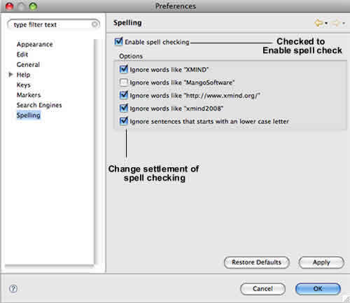

A spell checker is automatically invoked as users type text into XMind topics. The misspelled words are marked with a red underline. Right-click on the word, you can replace it with the suggested words, or add this word to your dictionary.

You can change more settings via following steps:
- Choose 'Window > Preferences' on the menu.
- Select 'Spelling'.
- You can see following check boxes:
- Enable spell checking
- Ignore words like "XMind"
- Ignore words like "MangoSoftware"
- Ignore words like "http://www.XMind.org/"
- Ignore words like "XMind2008"
- Ignore sentences that starts with an lower case letter

Note: Spell checker is also available in the rich text notes.
You may also be interesting at...